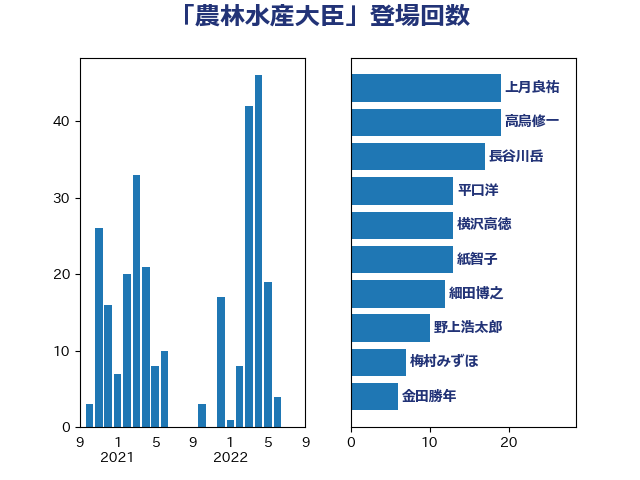

単語「農林水産大臣」

| 上月良祐 | 自由民主党 | 19 回 |
| 高鳥修一 | 自由民主党 | 19 回 |
| 長谷川岳 | 自由民主党 | 17 回 |
| 平口洋 | 自由民主党 | 13 回 |
| 横沢高徳 | 立憲民主党 | 13 回 |
| 紙智子 | 日本共産党 | 13 回 |
| 細田博之 | 自由民主党 | 12 回 |
| 野上浩太郎 | 自由民主党 | 10 回 |
| 梅村みずほ | 日本維新の会 | 7 回 |
| 金田勝年 | 自由民主党 | 6 回 |
| 海江田万里 | 立憲民主党 | 5 回 |
| 舟山康江 | 国民民主党 | 5 回 |
| 池畑浩太朗 | 日本維新の会 | 4 回 |
| 空本誠喜 | 日本維新の会 | 4 回 |
| 金城泰邦 | 公明党 | 4 回 |
| 林芳正 | 自由民主党 | 3 回 |
| 菅直人 | 立憲民主党 | 3 回 |
| 西銘恒三郎 | 自由民主党 | 3 回 |
| 齋藤健 | 自由民主党 | 3 回 |
| 吉田宣弘 | 公明党 | 2 回 |
| 小宮山泰子 | 立憲民主党 | 2 回 |
| 武田良太 | 自由民主党 | 2 回 |
| 河野義博 | 公明党 | 2 回 |
| 田村貴昭 | 日本共産党 | 2 回 |
| 石垣のりこ | 立憲民主党 | 2 回 |
| 神谷裕 | 立憲民主党 | 2 回 |
| 芳賀道也 | 国民民主党 | 2 回 |
| 藤木眞也 | 自由民主党 | 2 回 |
| 谷合正明 | 公明党 | 2 回 |
| 進藤金日子 | 自由民主党 | 2 回 |
| 高野光二郎 | 自由民主党 | 2 回 |
| 下野六太 | 公明党 | 1 回 |
| 串田誠一 | 日本維新の会 | 1 回 |
| 伊藤孝江 | 公明党 | 1 回 |
| 冨樫博之 | 自由民主党 | 1 回 |
| 勝部賢志 | 立憲民主党 | 1 回 |
| 古川康 | 自由民主党 | 1 回 |
| 土屋品子 | 自由民主党 | 1 回 |
| 大串博志 | 立憲民主党 | 1 回 |
| 安江伸夫 | 公明党 | 1 回 |
| 宮下一郎 | 自由民主党 | 1 回 |
| 小沼巧 | 立憲民主党 | 1 回 |
| 山口俊一 | 自由民主党 | 1 回 |
| 山口壯 | 自由民主党 | 1 回 |
| 山東昭子 | 自由民主党 | 1 回 |
| 山田宏 | 自由民主党 | 1 回 |
| 岸田文雄 | 自由民主党 | 1 回 |
| 斎藤洋明 | 自由民主党 | 1 回 |
| 枝野幸男 | 立憲民主党 | 1 回 |
| 柳ヶ瀬裕文 | 日本維新の会 | 1 回 |
| 柴田巧 | 日本維新の会 | 1 回 |
| 梶山弘志 | 自由民主党 | 1 回 |
| 櫻井周 | 立憲民主党 | 1 回 |
| 江藤拓 | 自由民主党 | 1 回 |
| 浅田均 | 日本維新の会 | 1 回 |
| 渡辺猛之 | 自由民主党 | 1 回 |
| 玄葉光一郎 | 立憲民主党 | 1 回 |
| 田名部匡代 | 立憲民主党 | 1 回 |
| 石川昭政 | 自由民主党 | 1 回 |
| 稲津久 | 公明党 | 1 回 |
| 竹内譲 | 公明党 | 1 回 |
| 篠原孝 | 立憲民主党 | 1 回 |
| 細田健一 | 自由民主党 | 1 回 |
| 緒方林太郎 | 無所属 | 1 回 |
| 葉梨康弘 | 自由民主党 | 1 回 |
| 藤岡隆雄 | 立憲民主党 | 1 回 |
| 道下大樹 | 立憲民主党 | 1 回 |
| 重徳和彦 | 立憲民主党 | 1 回 |
| 野村哲郎 | 自由民主党 | 1 回 |
| 金子恵美 | 立憲民主党 | 1 回 |
| 須藤元気 | 無所属 | 1 回 |
| 鷲尾英一郎 | 自由民主党 | 1 回 |